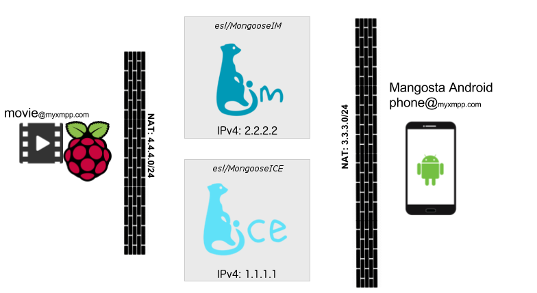
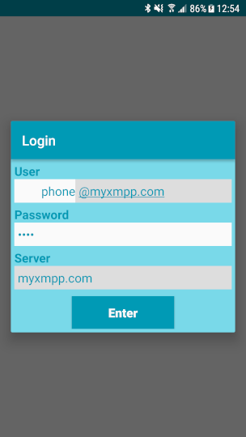
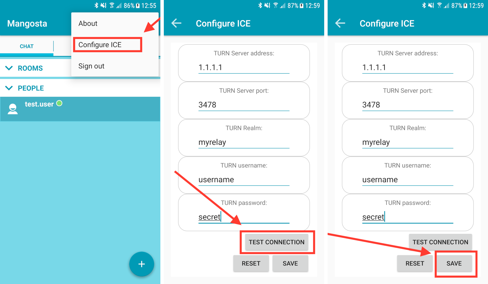
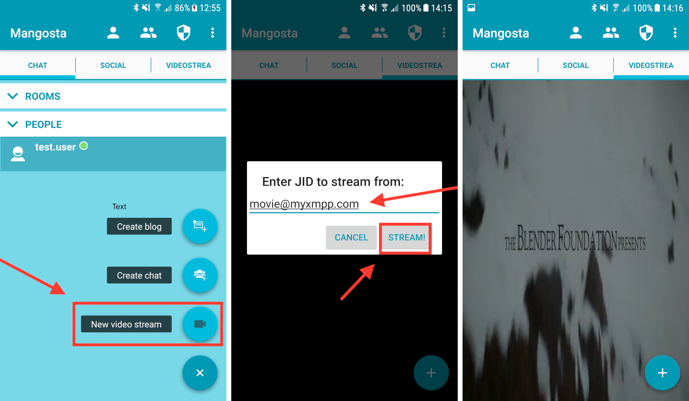

How to set up MongooseICE (ICE/TURN/STUN server)
Introduction
Who is this document for?
This tutorial presents our TURN/STUN server in action. You get to see how to set up and configure MongooseICE and examine a system utilising its many talents.
Are you in need of an application requiring NAT traversal? Want to see how a TURN and STUN server would handle it? Or maybe you just like to tinker with interesting technologies and experience setting them up first hand?
If that's the case, this tutorial is for you.
What is the end result of this tutorial?
At the end of the tutorial you will have a working environment with two peers, one sending a live video to another. The peer-to-peer communication will not be obstructed by any NATs that may occur in the background. The live video stream is only an example here - there are many possible use cases for peer-to-peer communication with NAT traversal. We chose to build an example application that shows video streaming, because it's vivid, catchy and fun.
What do I need to begin?
Before you begin you have to prepare an environment for setting up the components used in this tutorial. Here's a list of things you'll need: * One Android phone (or at least an Android emulator). The video player in this tutorial is available only as an Android application. * RaspberryPi or any other device that is able to run Elixir code. Oh, and also has ffmpeg installed. We are going to use use RaspberryPi 3, to give this tutorial a hint of IoT. * At least one machine with a public IPv4 address. It is necessary, because both MongooseIM and MongooseICE servers need to be accessible by all devices that are used in this demo system. You could use a private, local IP address, but then you would need to ensure that your phone and the RaspberryPi are behind some kind of a NAT relative to this IP address.
Note
The demo will probably work without the NAT, but then there is no point in setting up a TURN server.
We are going to use 2 VPS (Virtual Private Server) that are located somewhere far far away, both having public IPv4 address. Let's say MongooseICE is bound to 1.1.1.1, and MongooseIM to 2.2.2.2.
General architecture of the environment built with this tutorial
This is the architecture of the system we are building: 
As we know by now, MongooseIM is bound to 2.2.2.2/myxmpp.com and MongooseICE to 1.1.1.1. We also have a RaspberryPi that is connected to a private network (so is behind some NAT) and an Android phone that is connected to an LTE network and also is behind the carrier's NAT.
ICE notes
The end result of this tutorial not only uses MongooseICE and MongooseIM servers but also uses custom version of Mangosta-Android and [DemoStreamerICE]. Both projects are custom modified and custom made respectively in order to showcase the video streaming using the data relay capabilities provided by MongooseICE. The streaming itself, along with the signalling protocol, were prepared only for the case of this demo and are not a part of the platform. Those components exist only to visualize what can be achieved with MongooseICE and what can be built on top of it.
Setting up MongooseIM (signalling)
The ICE is nothing without signalling. The signalling protocol itself can be designed specifically for the application that is being deployed or can be implemented based on some standards, e.g. Jingle. Here, we chose to implement the simplest signalling possible, i.e. sending relay addresses via XMPP messages. No matter if we decide to go with this approach or with Jingle, we can use the MongooseIM XMPP server as a transport layer for the signalling. In order to enable signalling we need an instance of MongooseIM running with the simplest configuration, since the only thing we need from it is to provide us with means to communicate between two peers.
Configuration
You can find MongooseIM installation instructions on this page.
Once you have cloned the repository and compiled the project, you need to modify the mongooseim.toml config file (you can find this file at $REPO/_build/prod/rel/mongooseim/etc/mongooseim.toml, where $REPO is a top-level directory of the cloned repo).
1 2 | |
1 | |
Users
After we finish setting up MongooseIM, we need to register some users. For this demo we need two users: movie@myxmpp.com and phone@myxmpp.com, for RaspberryPi and the Android phone respectively. In order to do that, type:
1 2 | |
on the machine that has MongooseIM installed.
As you can see here, we have created those two users, both with the password xmpp_password for simplicity.
Setting up MongooseICE (TURN/STUN server)
Now, since MongooseIM handles the signalling, we need the TURN relay and the STUN server to send peer-to-peer data. For that we are going to use the star of this tutorial - MongooseICE.
How to get and configure
The whole documentation that describes all options and deployment methods, can be found on the project's github page. Let's get to it! (this command assumes that we are on the server for MongooseICE and that it has Docker installed):
1 | |
This command starts the MongooseICE server in the Docker container, attaching its virtual network interface to the network interface of the host machine the Docker deamon is running on. There are three important configuration options we have to set via environment variables:
- MONGOOSEICE_UDP_RELAY_IP - This is the IP address that MongooseICE provides data relay on. This should be set to public IPv4 address.
- MONGOOSEICE_STUN_SECRET - This is a secret password that TURN clients need to provide to connect to this server.
- MONGOOSEICE_UDP_REALM - This is just a name for your TURN relay.
And that's it! MongooseICE is now ready to roll!
Setting up Mangosta-Android
How to get and install
The source code of the video-stream-demo-enabled Mangosta-Android can be found on the ice_demo_kt branch.
If you want to tinker with it and compile it yourself, you can do that. All you need is Android Studio 2.3+.
The compilation is pretty straightforward, so I'm not going to explain it here.
If you are interested in how it works, most of the code is in the inaka.com.mangosta.videostream package.
If you don't want to compile this application from source, you can just install this .apk on your phone and that's it.
How to configure
Right after you start Mangosta-Android for the first time, you will need to login to your XMPP server. In order to do that, just enter the JID you have created for the phone (phone@myxmpp.com), the password (xmpp_password) and the server address (2.2.2.2 or myxmpp.com if you've set up the domain to actually point to this IP address), and then confirm by clicking "Enter".

After we log in, we can start setting up the connection to the MongooseICE server we set up before. The process is shown on the screenshots below.

On the "Configure ICE" screen we have to set 5 fields up:
- TURN server address - IPv4 address of our MongooseICE
- TURN Server port - since we did not set the port while configuring MongooseICE it uses a default one - 3478
- TURN Realm - Realm name we have set via MONGOOSEICE_UDP_REALM variable. In our case it's "myrelay".
- TURN username - Current version of MongooseICE ignores this, so you may leave it as is.
- TURN password - The password that we have set via MONGOOSEICE_STUN_SECRET variable. In our case it's "secret"
And that would be all. Now you can click "TEST CONNECTION" to, well..., test the connection. If everything works, you can "SAVE" the settings. Now your Mangosta-Android is ready to play streamed video, but we still need the source...
Setting up RaspberryPi
Let's configure the video source now. In our case it will be a RaspberryPi with Elixir and ffmpeg installed running our ICE demo application.
The software
For this demo we provide a simple XMPP client that also is able to send live video stream using ffmpeg whenever other peer asks for it via XMPP. This client is written in Elixir, so we can run it from source quite easily.
How to get and configure
You can get the client's sources here. For now we only need to run it, so let's get to it (on our RaspberryPi):
1 2 3 4 | |
After a while we should get into Elixir shell. In order to enable the streamer, we need to start it, providing some configuration options (in the Elixir shell):
1 2 3 4 5 6 7 8 9 10 | |
The first 3 options are all about connecting to the XMPP server - we use "movie@myxmpp.com" user that we created earlier. Next 3 options are about connecting to the MongooseICE server. Those are similar to ones we set in Mangosta-Android. The last one points to the video file that will be streamed on request. This file has to be raw, H.264-encoded, video-only file. If you are not sure how to get one, you can just use this one (pre-rendered Sintel, OpenBlender project). With this configuration, our RaspberryPi is ready to stream!
The end result
Playing the video
Now we finally can get out phone and start streaming the video! In order to do that, we have to click the "New video stream" button as shown on the screenshots below, enter the JID of the RaspberryPi and confirm with the "Stream!" button.

Hopefully, now you can see the video on your own mobile device.